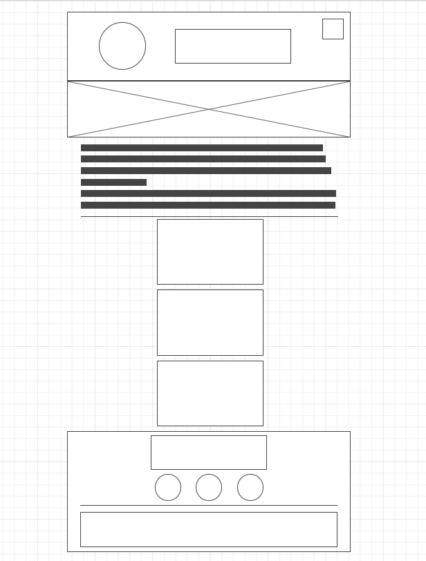
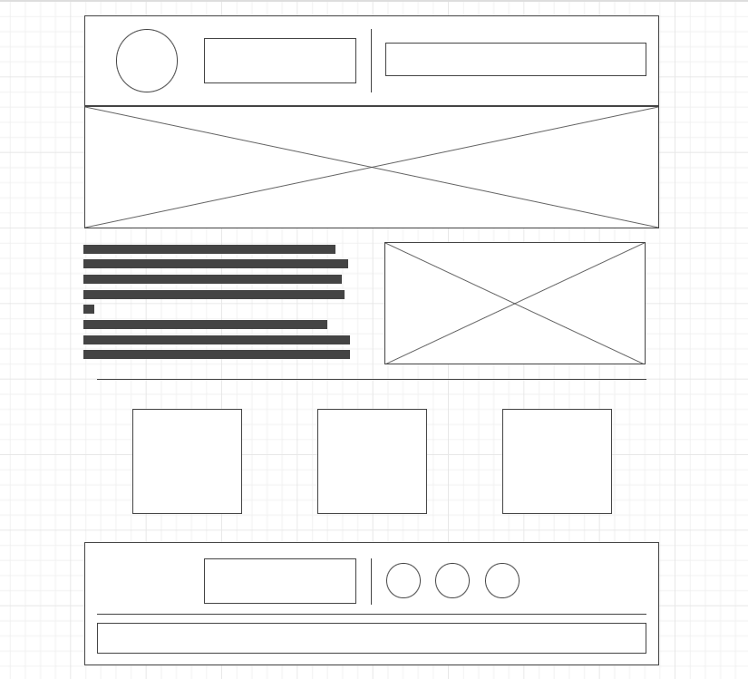

Site Name
Winston Salem Chamber of Commerce.
Site Purpose
This site is to help viewers learn more about the city of Winston Salem to help them decide how they wish to spend their time during their visit in the city.
Scenarios
- What kind of activites take place in the city of Winston Salem?
- Are there good restaurants to eat there?
- What makes the city special that would peek my interest to visit?
Color Schema
I tried to match the color scheme for the logo of the city. I want the page to speak that this is a chamber site for the city of Winston Salem. Midnight Blue is the closest I could find to the logo. Midnight Blue is used in the header and footer with snow-colored font. Black for the font color for the rest of the page.
Typography
I want the headings to be bold like usual, but the regular font to not be bold during the paragraphs. I chose Roboto Slab as the primary font family because I like how it looks for a city web page.
Wireframe
These are the mobile and desktop wireframes to give an idea of how the page will be displayed. The desktop view will feature the current weather, but it won't be visable on mobile. There will be three categories that will feature the city's events, restaurants, and what makes the city special.
 